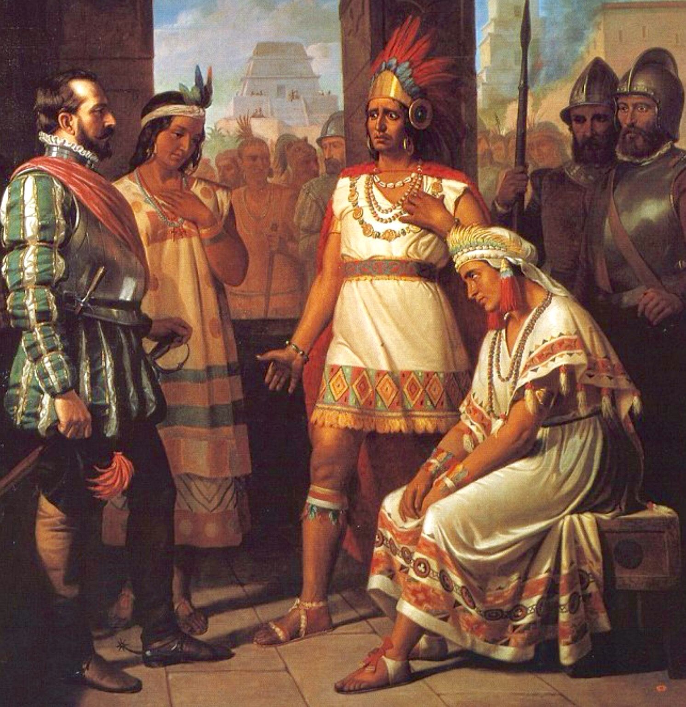

Causas
Causas
Las causas por las que se logró la conquista de Tenochtitlán fueron las siguientes:
- La necesidad de los españoles de ocupar la capital de los aztecas para consolidar la conquista del territorio mexica.
- La enemistad de los aztecas con los pueblos indígenas vecinos que estaban sometidos. El odio a los aztecas era tan grande, que estos pueblos prefirieron apoyar a los españoles en la conquista.
- La situación geográfica de la ciudad, en el centro de un sistema de lagunas, facilitó el control del agua y los alimentos por parte de los sitiadores.
- La viruela, que se había transmitido a la llegada de los españoles, causó una epidemia entre los mexicas provocando una gran mortalidad.
Consecuencias
Entre las principales consecuencias de la conquista de Tenochtitlán podemos destacar las siguientes:
- Se venció definitivamente al Imperio azteca y se concretó la instalación del poder español en México.
- Se exterminó a gran parte de la población de Tenochtitlán. Los indígenas sobrevivientes fueron obligados a convertirse al cristianismo y sometidos a la autoridad española. Se destruyeron sus manifestaciones culturales.
- Se destruyó la ciudad y se desecaron los lagos que la rodeaban. Eso provocó un desequilibrio ecológico que tiene consecuencias hasta la actualidad.
